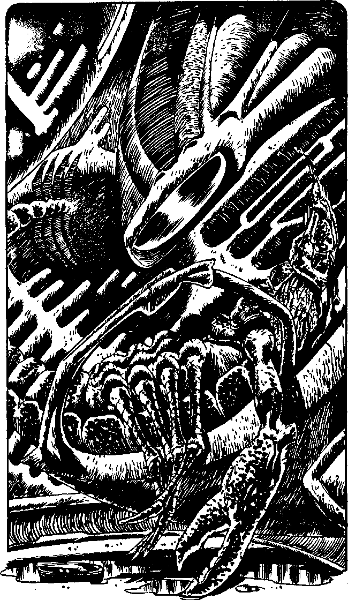

360
You float down from the Access Hatch, lowered by invisible Tractor Beams. You can smell ozone in the air of the Spaceport. Rounding a bulkhead you come across a refuelling bay and your holo-detector indicates that the Keladi scoutship in front of you is in fact a Time Machine. Judging by its size it could only be that of Lord Kirik. As you walk through the hologram you are surprised to see water underfoot. Kirik's Machine is normally water filled, a much larger model than your own. Clearly all is not well for, as you look up, you see that his Access Hatch is open and on automatic. His Mind Scan is not operating and you are drawn up into his machine. The grotesque body of Lord Kirik lies inert across his crash couch, the disc which is his Psionic Enhancer lies in a pool of water at his side. The usually bloated brain sacs are flaccid and his jointed legs curled unnaturally. Looking more closely you notice a neat circular wound in the middle of one of his brain sacs, still pouring purplish fluid. There is no sign of the weapon that was used to do this. He has been killed quite recently by someone who he had allowed into his Time Machine. There is no helping Lord Kirik. Do you:
| Leave the scene of the crime before you can be discovered there? | Turn to 262 |
| Send Kirik's machine into null-space? | Turn to 382 |